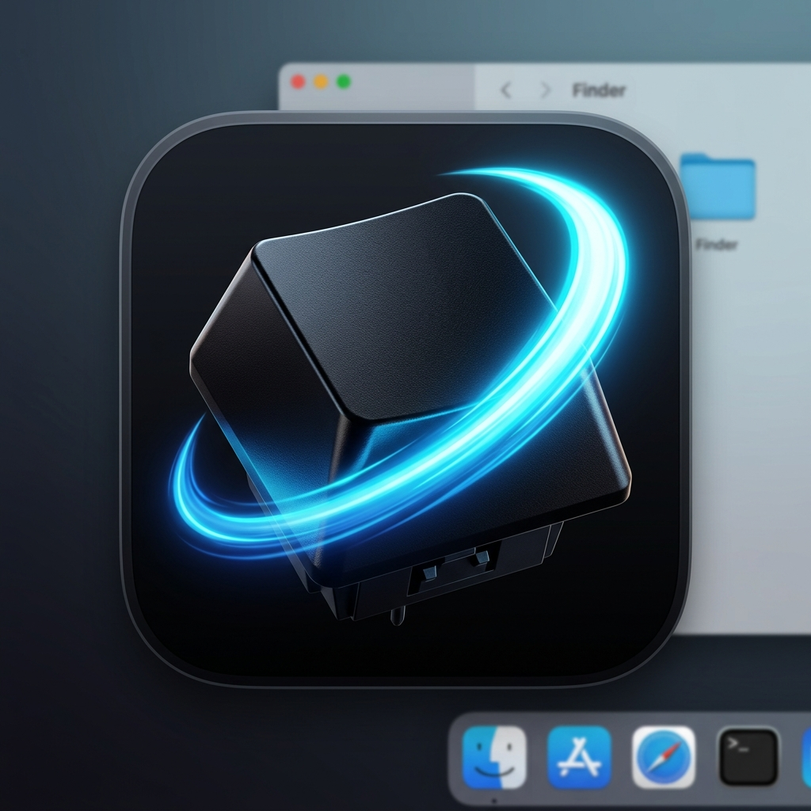

IAI for Safari
Enable the extension in Safari to start using keyboard navigation.
The Safari extension is currently enabled.
The Safari extension is currently disabled.
Setup
- Open Safari Settings and enable the extension.
- Grant website access for the sites where you want keyboard navigation.
- Open a web page and press f to show hints.
Default Shortcuts
Permissions
The extension reads visible links, buttons, form controls, and element positions on pages where you grant access. This is used locally to draw hints and run keyboard commands.
It does not send page content, browsing data, or shortcut activity to any external server.
Settings
Site-specific access, shortcut customization, and hint appearance settings are managed from the extension settings page in Safari.
Support & Privacy
For more information about how we handle your data, or to report issues and request features, please visit our online pages: